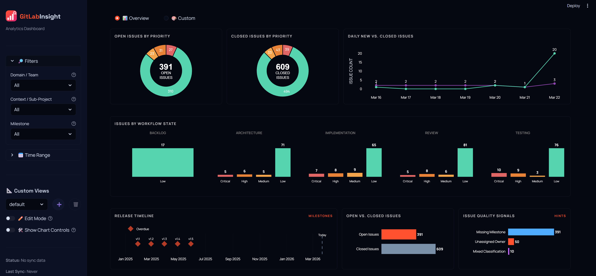
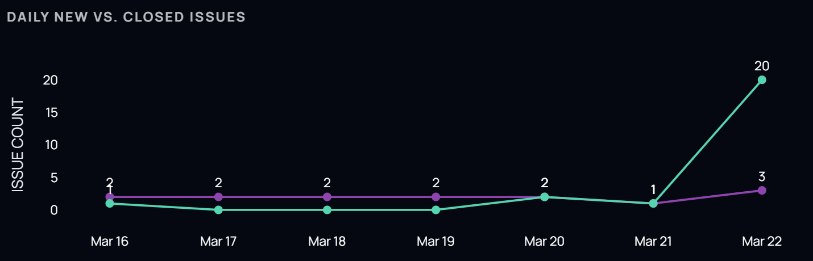
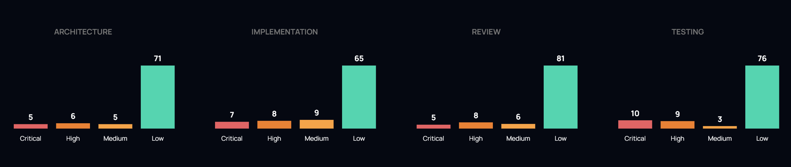
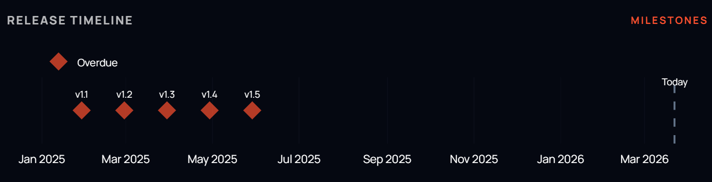
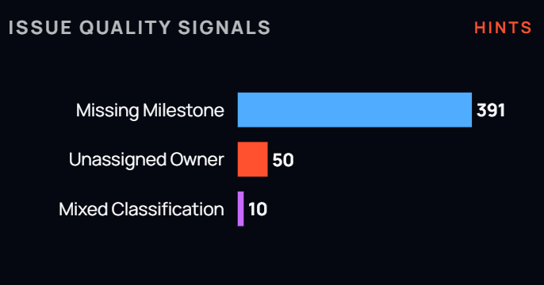

Track issue velocity, workflow states, and milestone health across your repositories.

GitLab Pulse parses your issues and milestones to generate the following views.

A stacked area chart comparing daily opened vs. closed issues over a 7-day window.

Issues grouped by specific labels (e.g., architecture, implementation, review) to identify where work is currently sitting in your pipeline.

A horizontal Gantt-style view of milestones showing their health (overdue, on track, completed) and deadlines.

Lists issues that are missing critical labels—such as milestones, or assignees—to help keep your backlog organized.
GitLab Pulse fetches data from the GitLab API to populate pre-configured charts.
Visual representation of issue volume over time using area and bar charts.
Aggregated issue counts based on workflow labels and priority levels.
Aggregated metrics for specific milestones, including burn-down status and unassigned items.